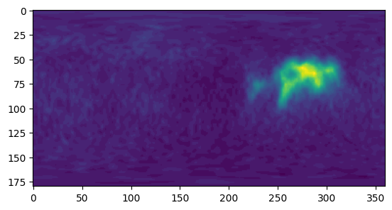
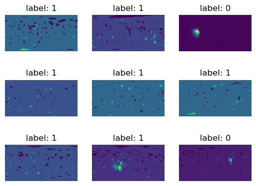

Branch Classifier
[1]:
%load_ext autoreload
%autoreload 2
%matplotlib inline
[2]:
import cProfile
from datetime import datetime
from glob import glob
import matplotlib.pyplot as plt
import numpy as np
import os
import pandas as pd
import pstats
import scipy.ndimage
from scipy.ndimage import gaussian_filter, median_filter, binary_opening, binary_closing
from scipy.ndimage import binary_dilation, generate_binary_structure, map_coordinates
import sys
import tifffile as tf
import torch
from torch.utils.data import DataLoader
sys.path.append("../")
from data_prep import collect, load, draw, save, image
from data_prep.image import Image
from solvers import branch_classifier
import models
date = datetime.now().strftime("%m-%d-%y")
dtype = torch.float32
DEVICE = "cuda" if torch.cuda.is_available() else "cpu"
Collect branch classifier training data
Training data consists of volumetric image patches chosen randomly from the neuron node coordinates given
in the SWC file with an added small random translation. Image patches are labeled 1 if they are centered on
a branch point and 0 otherwise.
Get sample points from swc files then save sample spherical patches
[3]:
# Load SWC file data into python lists
swc_dir = os.path.expanduser("~/data/gold166_swc_scaled")
swc_files = os.listdir(swc_dir)
swc_files = sorted(swc_files)
img_dir = os.path.expanduser("~/data/gold166_tifs_scaled/")
img_files = os.listdir(img_dir)
img_files = sorted(img_files)
out_dir = os.path.expanduser("~/bmap/gold166_classifier_data/")
if not os.path.exists(out_dir):
os.makedirs(out_dir, exist_ok=True)
print(f"Created directory: {out_dir}")
if not os.path.exists(os.path.join(out_dir, "observations")):
os.makedirs(os.path.join(out_dir, "observations"))
[4]:
collect.save_coordinates_and_annotations(swc_dir, img_dir, out_dir, samples_per_neuron=100, seed=0)
30%|███ | 40/132 [14:12<01:29, 1.02it/s] /home/brysongray/neurotrack/notebooks/../data_prep/image.py:204: UserWarning: Center tensor([ 23.6088, 192.6740, 419.1150], dtype=torch.float64) is out of bounds for image shape torch.Size([24, 543, 1018]). Translating to the nearest valid index.
warnings.warn(f"Center {center} is out of bounds for image shape {shape}. Translating to the nearest valid index.")
100%|██████████| 132/132 [16:53<00:00, 7.68s/it]
[4]:
img_dir = "/home/brysongray/data/gold166_tifs_scaled/"
out_dir = "/home/brysongray/data/gold166_classifier_data/"
sample_points = np.load(os.path.join("/home/brysongray/bmap/gold166_classifier_data/sample_points.npy"), allow_pickle=True)
sample_points = sample_points.item()
radii = torch.arange(6,55,6)
collect.save_spherical_patches(sample_points, img_dir, out_dir, radii)
0%| | 0/132 [00:00<?, ?it/s] 2%|▏ | 2/132 [03:55<4:15:19, 117.85s/it]
---------------------------------------------------------------------------
RuntimeError Traceback (most recent call last)
File ~/anaconda3/envs/tractography/lib/python3.12/site-packages/torch/serialization.py:652, in save(obj, f, pickle_module, pickle_protocol, _use_new_zipfile_serialization, _disable_byteorder_record)
651 with _open_zipfile_writer(f) as opened_zipfile:
--> 652 _save(obj, opened_zipfile, pickle_module, pickle_protocol, _disable_byteorder_record)
653 return
File ~/anaconda3/envs/tractography/lib/python3.12/site-packages/torch/serialization.py:886, in _save(obj, zip_file, pickle_module, pickle_protocol, _disable_byteorder_record)
885 num_bytes = storage.nbytes()
--> 886 zip_file.write_record(name, storage, num_bytes)
RuntimeError: [enforce fail at inline_container.cc:778] . PytorchStreamWriter failed writing file data/0: file write failed
During handling of the above exception, another exception occurred:
RuntimeError Traceback (most recent call last)
Cell In[4], line 6
4 sample_points = sample_points.item()
5 radii = torch.arange(6,55,6)
----> 6 collect.save_spherical_patches(sample_points, img_dir, out_dir, radii)
File ~/neurotrack/notebooks/../data_prep/collect.py:156, in save_spherical_patches(sample_points, img_dir, out_dir, radii, resolution, batch_size)
154 for j in range(len(spherical_patches)):
155 fname_out = f"obs_{obs_id}.pt"
--> 156 torch.save(spherical_patches[j], os.path.join(os.path.join(out_dir, "observations"), fname_out))
157 obs_id += 1
File ~/anaconda3/envs/tractography/lib/python3.12/site-packages/torch/serialization.py:651, in save(obj, f, pickle_module, pickle_protocol, _use_new_zipfile_serialization, _disable_byteorder_record)
648 _check_save_filelike(f)
650 if _use_new_zipfile_serialization:
--> 651 with _open_zipfile_writer(f) as opened_zipfile:
652 _save(obj, opened_zipfile, pickle_module, pickle_protocol, _disable_byteorder_record)
653 return
File ~/anaconda3/envs/tractography/lib/python3.12/site-packages/torch/serialization.py:499, in _open_zipfile_writer_file.__exit__(self, *args)
498 def __exit__(self, *args) -> None:
--> 499 self.file_like.write_end_of_file()
500 if self.file_stream is not None:
501 self.file_stream.close()
RuntimeError: [enforce fail at inline_container.cc:603] . unexpected pos 448 vs 342
[4]:
with cProfile.Profile() as pr:
collect.spherical_patch_dataset(img_dir=img_dir, swc_dir=swc_dir, out_dir=out_dir, samples_per_neuron=100, sync=False)
stats = pstats.Stats(pr)
stats.sort_stats('cumulative').print_stats()
stats.print_stats()
0%| | 0/1 [00:00<?, ?it/s]/home/bgray/anaconda3/envs/neurotrack/lib/python3.8/site-packages/numpy/core/fromnumeric.py:57: UserWarning: This overload of nonzero is deprecated:
nonzero()
Consider using one of the following signatures instead:
nonzero(*, bool as_tuple) (Triggered internally at /opt/conda/conda-bld/pytorch_1607370117127/work/torch/csrc/utils/python_arg_parser.cpp:882.)
return bound(*args, **kwds)
0%| | 0/1 [00:54<?, ?it/s]
---------------------------------------------------------------------------
NameError Traceback (most recent call last)
Cell In[4], line 2
1 with cProfile.Profile() as pr:
----> 2 collect.spherical_patch_dataset(img_dir=img_dir, swc_dir=swc_dir, out_dir=out_dir, samples_per_neuron=100, sync=False)
3 stats = pstats.Stats(pr)
4 stats.sort_stats('cumulative').print_stats()
File ~/neurotrack/notebooks/../data_prep/collect.py:204, in spherical_patch_dataset(swc_dir, img_dir, out_dir, samples_per_neuron, sync, seed)
200 del density
202 branch_coords, non_branch_coords = random_points_from_mask(mask, branches, samples_per_neuron, rng=rng)
--> 204 annotations, obs_id = save_spherical_patches(img, branch_coords, non_branch_coords, out_dir, start_id=obs_id, annotations=annotations)
206 # save annotations
207 # split into test and training data
208 name = "gold166"
File ~/neurotrack/notebooks/../data_prep/collect.py:125, in save_spherical_patches(img, branch_coords, non_branch_coords, out_dir, start_id, annotations)
118 permutations = [[0,1,2],
119 [0,2,1],
120 [1,2,0],
121 [1,0,2],
122 [2,0,1],
123 [2,1,0]]
124 # Create meshgrid for spherical coordinates
--> 125 theta_res, phi_res = resolution
126 theta = np.linspace(0, np.pi, theta_res)
127 phi = np.linspace(0, 2*np.pi, phi_res)
NameError: name 'resolution' is not defined
[17]:
observations = os.listdir(os.path.join(out_dir, "observations"))
obs = observations[0]
img = torch.load(os.path.join(out_dir,"observations", obs), weights_only=True)
img.shape
[17]:
torch.Size([18, 180, 360])
[24]:
plt.imshow(img[6])
[24]:
<matplotlib.image.AxesImage at 0x76c4431e4560>

[40]:
# swc_file = swc_files[1]
# swc_list = load.swc(os.path.join(swc_dir, swc_file), verbose=False)
swc_list = load.swc(os.path.join(swc_dir, 'GMR_57C10_AD_01-Two_recombinase_flipouts_A-f-A-20111108_4_E3-left_optic_lobe.v3draw.extract_1.v3dpbd.swc'), verbose=False)
sections, section_graph = parse_swc(swc_list)
[18]:
# display the image with a branch point
plt.imshow(img[56])
plt.show()

[ ]:
'GMR_57C10_AD_01-Two_recombinase_flipouts_A-f-A-20111108_4_E3-left_optic_lobe.v3draw.extract_1.v3dpbd.swc'
[ ]:
samples_per_neuron = 1000
rng = np.random.default_rng(0)
annotations = {}
obs_id = 0
for swc_file in swc_files:
swc_list = load.swc(os.path.join(swc_dir, swc_file), verbose=False)
img_name = [img_file for img_file in image_files if img_file.split('.tif')[0] in swc_file]
try:
img_name = img_name[0]
except IndexError:
continue
img_path = os.path.join(image_dir, img_name)
img = tf.imread(img_path)
shape = img.shape
del img
sections, sections_graph = load.parse_swc(swc_list)
branches, terminals = load.get_critical_points(swc_list, sections)
segments = []
for section in sections.values():
segments.append(section)
segments = torch.concatenate(segments)
density = draw.draw_neuron_density(segments, shape)
mask = draw.draw_neuron_mask(density, threshold=5.0)
del density
branch_coords, non_branch_coords = collect.random_points_from_mask(mask, branches, samples_per_neuron, rng=rng)
annotations, obs_id = collect.save_spherical_patches(img_path, branch_coords, non_branch_coords, out_dir, start_id=obs_id, annotations=annotations)
# save annotations
# split into test and training data
name = "gold166"
data_permutation = torch.randperm(len(annotations))
test_idxs = data_permutation[:len(data_permutation)//5].tolist()
training_idxs = data_permutation[len(data_permutation)//5:].tolist()
training_annotations = {list(annotations)[i]: list(annotations.values())[i] for i in training_idxs}
test_annotations = {list(annotations)[i]: list(annotations.values())[i] for i in test_idxs}
# save
df = pd.DataFrame.from_dict(training_annotations, orient="index")
df.to_csv(os.path.join(out_dir, f"branch_classifier_{name}_{date}_training_labels.csv"))
df = pd.DataFrame.from_dict(test_annotations, orient="index")
df.to_csv(os.path.join(out_dir, f"branch_classifier_{name}_{date}_test_labels.csv"))
---------------------------------------------------------------------------
KeyError Traceback (most recent call last)
Cell In[13], line 18
14 shape = img.shape
16 del img
---> 18 sections, graph, branches, terminals, scale = load.parse_swc_list(swc_list, adjust=False)
20 segments = []
21 for section in sections.values():
File ~/neurotrack/notebooks/../data_prep/load.py:170, in parse_swc_list(swc_list, adjust, transpose)
168 section_graph[section_id] = []
169 elif len(value) == 1:
--> 170 sections[section_id].append([swc_list[key-1][2:6], swc_list[value[0]-1][2:6]])
171 else:
172 # Edit 2/5/25: Every branch spawns new sections and terminates the parent section
173 if len(sections[section_id]) == 0: # The section is empty. This might happen if the root node is also a branch.
174 # In this case do not terminate the section
KeyError: 44
View some example input images
[14]:
observations = os.listdir(os.path.join(out_dir, "observations"))
training_annotations = pd.read_csv(glob(os.path.join(out_dir, "*_labels.csv"))[0])
ids = np.random.choice(len(training_annotations), size=9)
sample = training_annotations.iloc[ids]
fig, ax = plt.subplots(3,3)
ax = ax.flatten()
for i in range(len(ax)):
img = torch.load(os.path.join(out_dir,"observations", sample.iloc[i,0]), weights_only=True)
shell = 5 # type: ignore
ax[i].imshow(img[shell])#, vmin=0, vmax=.0)
ax[i].set_title(f"label: {sample.iloc[i,1].item()}")
ax[i].set_axis_off()
---------------------------------------------------------------------------
IndexError Traceback (most recent call last)
Cell In[14], line 2
1 observations = os.listdir(os.path.join(out_dir, "observations"))
----> 2 training_annotations = pd.read_csv(glob(os.path.join(out_dir, "*_labels.csv"))[0])
3 ids = np.random.choice(len(training_annotations), size=9)
4 sample = training_annotations.iloc[ids]
IndexError: list index out of range
[6]:
observations = os.listdir(os.path.join(out_dir, "observations"))
training_annotations = pd.read_csv(glob(os.path.join(out_dir, "*_labels.csv"))[0])
ids = np.random.choice(len(training_annotations), size=9)
sample = training_annotations.iloc[ids]
fig, ax = plt.subplots(3,3)
ax = ax.flatten()
for i in range(len(ax)):
img = torch.load(os.path.join(out_dir,"observations", sample.iloc[i,0]), weights_only=True)
shell = 5 # type: ignore
ax[i].imshow(img[shell])
ax[i].set_title(f"label: {sample.iloc[i,1].item()}")
ax[i].set_axis_off()

Train branch classifier
Instantiate dataloader for training and test datasets
Dataloaders use a weighted random sampler to balance classes. Additionally, the training dataset
adds a random permutation and flip to the image patch at retrieval.
[4]:
# set source data files paths
name = "gold166"
date = "03-07-25"
training_labels_file = os.path.join(out_dir, f"branch_classifier_{name}_{date}_training_labels.csv")
test_labels_file = os.path.join(out_dir, f"branch_classifier_{name}_{date}_test_labels.csv")
img_dir = os.path.join(out_dir, "observations")
# instantiate training and test datasets
transform = branch_classifier.transform_spherical_patch # random permutation and flip
training_data = branch_classifier.StateData(labels_file=training_labels_file,
img_dir=img_dir,
transform=transform)
test_data = branch_classifier.StateData(labels_file=test_labels_file,
img_dir=img_dir)
# instantiate dataloaders
batchsize=64
training_dataloader = DataLoader(training_data, batch_size=batchsize)
test_dataloader = DataLoader(test_data, batch_size=batchsize)
[6]:
out_dir = "classifier_weights/"
if not os.path.exists(out_dir):
os.makedirs(out_dir, exist_ok=True)
lr = 1e-3
epochs = 100
classifier = models.ResNet2D(models.ResidualBlock2D, [3, 4, 6, 3], in_channels=18, num_classes=1)
classifier = classifier.to(device=DEVICE, dtype=dtype)
branch_classifier.train(training_dataloader, test_dataloader, out_dir, lr, epochs, classifier, state_dict=None)
Epoch 1
-------------------------------
Accuracy: 39.0625, Loss: 0.703391 [ 64/ 800]
Accuracy: 62.5, Loss: 0.669111 [ 704/ 800]
Test Error:
Accuracy: 56.0%, Avg loss: 4.881491
Precision: 0.494, Recall: 0.437
Epoch 2
-------------------------------
Accuracy: 53.125, Loss: 0.704802 [ 64/ 800]
Accuracy: 70.3125, Loss: 0.652787 [ 704/ 800]
Test Error:
Accuracy: 61.5%, Avg loss: 0.599980
Precision: 0.534, Recall: 0.897
Epoch 3
-------------------------------
Accuracy: 68.75, Loss: 0.640434 [ 64/ 800]
Accuracy: 71.875, Loss: 0.638740 [ 704/ 800]
Test Error:
Accuracy: 56.0%, Avg loss: 0.652177
Precision: 0.497, Recall: 0.966
Epoch 4
-------------------------------
Accuracy: 56.25, Loss: 0.658557 [ 64/ 800]
Accuracy: 71.875, Loss: 0.626720 [ 704/ 800]
Test Error:
Accuracy: 61.0%, Avg loss: 0.633813
Precision: 0.529, Recall: 0.943
Epoch 5
-------------------------------
Accuracy: 60.9375, Loss: 0.640943 [ 64/ 800]
Accuracy: 67.1875, Loss: 0.637693 [ 704/ 800]
Test Error:
Accuracy: 57.5%, Avg loss: 0.658243
Precision: 0.509, Recall: 0.655
Epoch 6
-------------------------------
Accuracy: 62.5, Loss: 0.606103 [ 64/ 800]
Accuracy: 65.625, Loss: 0.606612 [ 704/ 800]
Test Error:
Accuracy: 55.5%, Avg loss: 0.657900
Precision: 0.494, Recall: 0.989
Epoch 7
-------------------------------
Accuracy: 70.3125, Loss: 0.595890 [ 64/ 800]
Accuracy: 68.75, Loss: 0.576913 [ 704/ 800]
Test Error:
Accuracy: 57.0%, Avg loss: 0.701318
Precision: 0.526, Recall: 0.115
Epoch 8
-------------------------------
Accuracy: 81.25, Loss: 0.452802 [ 64/ 800]
Accuracy: 71.875, Loss: 0.559934 [ 704/ 800]
Test Error:
Accuracy: 68.0%, Avg loss: 0.557682
Precision: 0.619, Recall: 0.690
Epoch 9
-------------------------------
Accuracy: 75.0, Loss: 0.478215 [ 64/ 800]
Accuracy: 71.875, Loss: 0.531449 [ 704/ 800]
Test Error:
Accuracy: 61.5%, Avg loss: 0.684491
Precision: 0.778, Recall: 0.161
Epoch 10
-------------------------------
Accuracy: 89.0625, Loss: 0.450271 [ 64/ 800]
Accuracy: 75.0, Loss: 0.540185 [ 704/ 800]
Test Error:
Accuracy: 55.5%, Avg loss: 1.540290
Precision: 0.000, Recall: 0.000
Epoch 11
-------------------------------
Accuracy: 85.9375, Loss: 0.370702 [ 64/ 800]
Accuracy: 84.375, Loss: 0.453712 [ 704/ 800]
Test Error:
Accuracy: 58.0%, Avg loss: 1.221362
Precision: 0.588, Recall: 0.115
Epoch 12
-------------------------------
Accuracy: 90.625, Loss: 0.251119 [ 64/ 800]
Accuracy: 84.375, Loss: 0.373820 [ 704/ 800]
Test Error:
Accuracy: 70.0%, Avg loss: 0.583933
Precision: 0.593, Recall: 0.989
Epoch 13
-------------------------------
Accuracy: 92.1875, Loss: 0.224241 [ 64/ 800]
Accuracy: 82.8125, Loss: 0.438444 [ 704/ 800]
Test Error:
Accuracy: 54.5%, Avg loss: 1.281696
Precision: 0.489, Recall: 1.000
Epoch 14
-------------------------------
Accuracy: 85.9375, Loss: 0.310433 [ 64/ 800]
Accuracy: 92.1875, Loss: 0.315762 [ 704/ 800]
Test Error:
Accuracy: 55.0%, Avg loss: 2.095819
Precision: 0.200, Recall: 0.011
Epoch 15
-------------------------------
Accuracy: 90.625, Loss: 0.227195 [ 64/ 800]
Accuracy: 90.625, Loss: 0.353017 [ 704/ 800]
Test Error:
Accuracy: 83.5%, Avg loss: 0.386423
Precision: 0.821, Recall: 0.793
Epoch 16
-------------------------------
Accuracy: 93.75, Loss: 0.203782 [ 64/ 800]
Accuracy: 81.25, Loss: 0.408644 [ 704/ 800]
Test Error:
Accuracy: 56.0%, Avg loss: 2.505667
Precision: 0.000, Recall: 0.000
Epoch 17
-------------------------------
Accuracy: 90.625, Loss: 0.295150 [ 64/ 800]
Accuracy: 84.375, Loss: 0.369796 [ 704/ 800]
Test Error:
Accuracy: 56.0%, Avg loss: 1.306220
Precision: 0.400, Recall: 0.023
Epoch 18
-------------------------------
Accuracy: 93.75, Loss: 0.246435 [ 64/ 800]
Accuracy: 78.125, Loss: 0.444177 [ 704/ 800]
Test Error:
Accuracy: 60.5%, Avg loss: 1.432457
Precision: 0.524, Recall: 1.000
Epoch 19
-------------------------------
Accuracy: 100.0, Loss: 0.106110 [ 64/ 800]
Accuracy: 90.625, Loss: 0.301327 [ 704/ 800]
Test Error:
Accuracy: 87.0%, Avg loss: 0.301011
Precision: 0.821, Recall: 0.897
Epoch 20
-------------------------------
Accuracy: 90.625, Loss: 0.261011 [ 64/ 800]
Accuracy: 90.625, Loss: 0.298108 [ 704/ 800]
Test Error:
Accuracy: 68.5%, Avg loss: 0.765352
Precision: 0.875, Recall: 0.322
Epoch 21
-------------------------------
Accuracy: 90.625, Loss: 0.230322 [ 64/ 800]
Accuracy: 92.1875, Loss: 0.244352 [ 704/ 800]
Test Error:
Accuracy: 80.5%, Avg loss: 0.440970
Precision: 0.800, Recall: 0.736
Epoch 22
-------------------------------
Accuracy: 93.75, Loss: 0.172819 [ 64/ 800]
Accuracy: 85.9375, Loss: 0.368360 [ 704/ 800]
Test Error:
Accuracy: 69.0%, Avg loss: 0.772308
Precision: 0.712, Recall: 0.483
Epoch 23
-------------------------------
Accuracy: 89.0625, Loss: 0.245157 [ 64/ 800]
Accuracy: 95.3125, Loss: 0.210674 [ 704/ 800]
Test Error:
Accuracy: 51.5%, Avg loss: 1.845257
Precision: 0.461, Recall: 0.678
Epoch 24
-------------------------------
Accuracy: 93.75, Loss: 0.161775 [ 64/ 800]
Accuracy: 81.25, Loss: 0.352529 [ 704/ 800]
Test Error:
Accuracy: 79.0%, Avg loss: 0.538154
Precision: 0.674, Recall: 1.000
Epoch 25
-------------------------------
Accuracy: 90.625, Loss: 0.214108 [ 64/ 800]
Accuracy: 98.4375, Loss: 0.191276 [ 704/ 800]
Test Error:
Accuracy: 85.5%, Avg loss: 0.408336
Precision: 0.750, Recall: 1.000
Epoch 26
-------------------------------
Accuracy: 95.3125, Loss: 0.154381 [ 64/ 800]
Accuracy: 85.9375, Loss: 0.389887 [ 704/ 800]
Test Error:
Accuracy: 77.0%, Avg loss: 0.784732
Precision: 0.654, Recall: 1.000
Epoch 27
-------------------------------
Accuracy: 92.1875, Loss: 0.191939 [ 64/ 800]
Accuracy: 92.1875, Loss: 0.207606 [ 704/ 800]
Test Error:
Accuracy: 63.0%, Avg loss: 1.089600
Precision: 0.540, Recall: 1.000
Epoch 28
-------------------------------
Accuracy: 95.3125, Loss: 0.137425 [ 64/ 800]
Accuracy: 82.8125, Loss: 0.324818 [ 704/ 800]
Test Error:
Accuracy: 58.5%, Avg loss: 1.174410
Precision: 0.667, Recall: 0.092
Epoch 29
-------------------------------
Accuracy: 90.625, Loss: 0.166352 [ 64/ 800]
Accuracy: 93.75, Loss: 0.184801 [ 704/ 800]
Test Error:
Accuracy: 88.5%, Avg loss: 0.261637
Precision: 0.791, Recall: 1.000
Epoch 30
-------------------------------
Accuracy: 93.75, Loss: 0.135094 [ 64/ 800]
Accuracy: 95.3125, Loss: 0.149030 [ 704/ 800]
Test Error:
Accuracy: 56.0%, Avg loss: 1.844880
Precision: 0.429, Recall: 0.034
Epoch 31
-------------------------------
Accuracy: 95.3125, Loss: 0.117862 [ 64/ 800]
Accuracy: 89.0625, Loss: 0.230197 [ 704/ 800]
Test Error:
Accuracy: 84.0%, Avg loss: 0.570127
Precision: 0.731, Recall: 1.000
Epoch 32
-------------------------------
Accuracy: 93.75, Loss: 0.099660 [ 64/ 800]
Accuracy: 95.3125, Loss: 0.195337 [ 704/ 800]
Test Error:
Accuracy: 61.5%, Avg loss: 1.389315
Precision: 0.708, Recall: 0.195
Epoch 33
-------------------------------
Accuracy: 96.875, Loss: 0.082520 [ 64/ 800]
Accuracy: 95.3125, Loss: 0.135303 [ 704/ 800]
Test Error:
Accuracy: 90.0%, Avg loss: 0.308871
Precision: 0.813, Recall: 1.000
Epoch 34
-------------------------------
Accuracy: 95.3125, Loss: 0.076202 [ 64/ 800]
Accuracy: 89.0625, Loss: 0.254178 [ 704/ 800]
Test Error:
Accuracy: 80.5%, Avg loss: 0.539204
Precision: 0.864, Recall: 0.655
Epoch 35
-------------------------------
Accuracy: 98.4375, Loss: 0.072962 [ 64/ 800]
Accuracy: 89.0625, Loss: 0.223270 [ 704/ 800]
Test Error:
Accuracy: 86.0%, Avg loss: 0.304325
Precision: 0.883, Recall: 0.782
Epoch 36
-------------------------------
Accuracy: 93.75, Loss: 0.105731 [ 64/ 800]
Accuracy: 92.1875, Loss: 0.170179 [ 704/ 800]
Test Error:
Accuracy: 57.0%, Avg loss: 1.569291
Precision: 1.000, Recall: 0.011
Epoch 37
-------------------------------
Accuracy: 96.875, Loss: 0.180506 [ 64/ 800]
Accuracy: 89.0625, Loss: 0.319853 [ 704/ 800]
Test Error:
Accuracy: 80.0%, Avg loss: 0.468348
Precision: 0.841, Recall: 0.667
Epoch 38
-------------------------------
Accuracy: 90.625, Loss: 0.176669 [ 64/ 800]
Accuracy: 95.3125, Loss: 0.214727 [ 704/ 800]
Test Error:
Accuracy: 81.5%, Avg loss: 0.584653
Precision: 0.708, Recall: 0.977
Epoch 39
-------------------------------
Accuracy: 90.625, Loss: 0.133789 [ 64/ 800]
Accuracy: 92.1875, Loss: 0.154165 [ 704/ 800]
Test Error:
Accuracy: 88.0%, Avg loss: 0.481254
Precision: 0.789, Recall: 0.989
Epoch 40
-------------------------------
Accuracy: 98.4375, Loss: 0.057581 [ 64/ 800]
Accuracy: 95.3125, Loss: 0.137169 [ 704/ 800]
Test Error:
Accuracy: 59.0%, Avg loss: 1.550178
Precision: 0.778, Recall: 0.080
Epoch 41
-------------------------------
Accuracy: 92.1875, Loss: 0.149610 [ 64/ 800]
Accuracy: 93.75, Loss: 0.099091 [ 704/ 800]
Test Error:
Accuracy: 89.5%, Avg loss: 0.587661
Precision: 0.806, Recall: 1.000
Epoch 42
-------------------------------
Accuracy: 98.4375, Loss: 0.055386 [ 64/ 800]
Accuracy: 95.3125, Loss: 0.106788 [ 704/ 800]
Test Error:
Accuracy: 77.0%, Avg loss: 0.551968
Precision: 0.918, Recall: 0.517
Epoch 43
-------------------------------
Accuracy: 95.3125, Loss: 0.089324 [ 64/ 800]
Accuracy: 98.4375, Loss: 0.060097 [ 704/ 800]
Test Error:
Accuracy: 88.5%, Avg loss: 0.226695
Precision: 0.833, Recall: 0.920
Epoch 44
-------------------------------
Accuracy: 98.4375, Loss: 0.098446 [ 64/ 800]
Accuracy: 93.75, Loss: 0.106019 [ 704/ 800]
Test Error:
Accuracy: 85.0%, Avg loss: 0.675663
Precision: 0.744, Recall: 1.000
Epoch 45
-------------------------------
Accuracy: 100.0, Loss: 0.047596 [ 64/ 800]
Accuracy: 92.1875, Loss: 0.230815 [ 704/ 800]
Test Error:
Accuracy: 88.5%, Avg loss: 0.450181
Precision: 0.791, Recall: 1.000
Epoch 46
-------------------------------
Accuracy: 100.0, Loss: 0.049200 [ 64/ 800]
Accuracy: 98.4375, Loss: 0.086568 [ 704/ 800]
Test Error:
Accuracy: 85.5%, Avg loss: 0.347627
Precision: 0.854, Recall: 0.805
Epoch 47
-------------------------------
Accuracy: 96.875, Loss: 0.089471 [ 64/ 800]
Accuracy: 93.75, Loss: 0.163588 [ 704/ 800]
Test Error:
Accuracy: 90.5%, Avg loss: 0.286796
Precision: 0.833, Recall: 0.977
Epoch 48
-------------------------------
Accuracy: 95.3125, Loss: 0.079789 [ 64/ 800]
Accuracy: 96.875, Loss: 0.111913 [ 704/ 800]
Test Error:
Accuracy: 57.0%, Avg loss: 2.013019
Precision: 0.556, Recall: 0.057
Epoch 49
-------------------------------
Accuracy: 96.875, Loss: 0.067191 [ 64/ 800]
Accuracy: 95.3125, Loss: 0.089574 [ 704/ 800]
Test Error:
Accuracy: 67.5%, Avg loss: 1.131164
Precision: 0.844, Recall: 0.310
Epoch 50
-------------------------------
Accuracy: 96.875, Loss: 0.056421 [ 64/ 800]
Accuracy: 95.3125, Loss: 0.118796 [ 704/ 800]
Test Error:
Accuracy: 90.5%, Avg loss: 0.567866
Precision: 0.827, Recall: 0.989
Epoch 51
-------------------------------
Accuracy: 98.4375, Loss: 0.038246 [ 64/ 800]
Accuracy: 92.1875, Loss: 0.171553 [ 704/ 800]
Test Error:
Accuracy: 88.0%, Avg loss: 0.458670
Precision: 0.784, Recall: 1.000
Epoch 52
-------------------------------
Accuracy: 98.4375, Loss: 0.052928 [ 64/ 800]
Accuracy: 95.3125, Loss: 0.113807 [ 704/ 800]
Test Error:
Accuracy: 82.5%, Avg loss: 0.391092
Precision: 0.882, Recall: 0.690
Epoch 53
-------------------------------
Accuracy: 95.3125, Loss: 0.125121 [ 64/ 800]
Accuracy: 98.4375, Loss: 0.058235 [ 704/ 800]
Test Error:
Accuracy: 89.0%, Avg loss: 0.558874
Precision: 0.798, Recall: 1.000
Epoch 54
-------------------------------
Accuracy: 100.0, Loss: 0.023715 [ 64/ 800]
Accuracy: 98.4375, Loss: 0.073507 [ 704/ 800]
Test Error:
Accuracy: 86.0%, Avg loss: 0.419189
Precision: 0.847, Recall: 0.828
Epoch 55
-------------------------------
Accuracy: 100.0, Loss: 0.027488 [ 64/ 800]
Accuracy: 100.0, Loss: 0.026861 [ 704/ 800]
Test Error:
Accuracy: 84.5%, Avg loss: 0.471234
Precision: 0.868, Recall: 0.759
Epoch 56
-------------------------------
Accuracy: 100.0, Loss: 0.012006 [ 64/ 800]
Accuracy: 100.0, Loss: 0.008822 [ 704/ 800]
Test Error:
Accuracy: 83.0%, Avg loss: 0.507827
Precision: 0.863, Recall: 0.724
Epoch 57
-------------------------------
Accuracy: 100.0, Loss: 0.014471 [ 64/ 800]
Accuracy: 100.0, Loss: 0.007385 [ 704/ 800]
Test Error:
Accuracy: 57.0%, Avg loss: 2.872814
Precision: 0.600, Recall: 0.034
Epoch 58
-------------------------------
Accuracy: 98.4375, Loss: 0.018979 [ 64/ 800]
Accuracy: 100.0, Loss: 0.013426 [ 704/ 800]
Test Error:
Accuracy: 74.5%, Avg loss: 1.154716
Precision: 0.929, Recall: 0.448
Epoch 59
-------------------------------
Accuracy: 100.0, Loss: 0.002183 [ 64/ 800]
Accuracy: 98.4375, Loss: 0.027109 [ 704/ 800]
Test Error:
Accuracy: 67.5%, Avg loss: 1.809722
Precision: 0.923, Recall: 0.276
Epoch 60
-------------------------------
Accuracy: 100.0, Loss: 0.009196 [ 64/ 800]
Accuracy: 100.0, Loss: 0.022003 [ 704/ 800]
Test Error:
Accuracy: 66.5%, Avg loss: 2.165362
Precision: 0.917, Recall: 0.253
Epoch 61
-------------------------------
Accuracy: 100.0, Loss: 0.006062 [ 64/ 800]
Accuracy: 100.0, Loss: 0.003515 [ 704/ 800]
Test Error:
Accuracy: 86.5%, Avg loss: 0.650821
Precision: 0.841, Recall: 0.851
Epoch 62
-------------------------------
Accuracy: 98.4375, Loss: 0.029996 [ 64/ 800]
Accuracy: 98.4375, Loss: 0.018563 [ 704/ 800]
Test Error:
Accuracy: 79.0%, Avg loss: 0.890160
Precision: 0.959, Recall: 0.540
Epoch 63
-------------------------------
Accuracy: 98.4375, Loss: 0.023546 [ 64/ 800]
---------------------------------------------------------------------------
KeyboardInterrupt Traceback (most recent call last)
Cell In[6], line 10
7 classifier = models.ResNet2D(models.ResidualBlock2D, [3, 4, 6, 3], in_channels=18, num_classes=1)
8 classifier = classifier.to(device=DEVICE, dtype=dtype)
---> 10 branch_classifier.train(training_dataloader, test_dataloader, out_dir, lr, epochs, classifier, state_dict=None)
File ~/neurotrack/notebooks/../solvers/branch_classifier.py:268, in train(train_dataloader, test_dataloader, out_dir, lr, epochs, classifier, state_dict)
266 for i,t in enumerate(range(epochs)):
267 print(f"Epoch {t+1}\n-------------------------------")
--> 268 train_loop(train_dataloader, classifier, binary_loss, classifier_optimizer)
269 test_loop(test_dataloader, classifier, binary_loss)
270 torch.save(classifier.state_dict(), os.path.join(out_dir, f"resnet_classifier_{date}_checkpoint-{i}.pt"))
File ~/neurotrack/notebooks/../solvers/branch_classifier.py:125, in train_loop(dataloader, model, loss_fn, optimizer)
122 model.train()
123 for batch, (X,y) in enumerate(dataloader):
124 # out = model(X[:,:3].to(device=DEVICE))
--> 125 out = model(X.to(device=DEVICE,dtype=torch.float32))
126 out = torch.nn.functional.sigmoid(out.squeeze())
127 # out = torch.nn.functional.softmax(out, dim=1)
128 # y = torch.nn.functional.one_hot(y, num_classes=3)
KeyboardInterrupt:
Save sample patches and labels from image files
[ ]:
# save sample patches from the images centered at the sample points
# image_dir = "/home/brysongray/data/simulated_neurons/neuromorpho_sub1_with_artifacts"
image_dir = "/home/brysongray/"
out_dir = "classifier_data"
if not os.path.exists(out_dir):
os.makedirs(out_dir, exist_ok=True)
name = "neuromorpho_test"
collect.collect_data(sample_points, image_dir, out_dir, name, date)
View some example input images
[10]:
observations = os.listdir(os.path.join(out_dir, "observations"))
training_annotations = pd.read_csv(glob(os.path.join(out_dir, "*_labels.csv"))[0])
ids = np.random.choice(len(training_annotations), size=9)
sample = training_annotations.iloc[ids]
fig, ax = plt.subplots(3,3)
ax = ax.flatten()
for i in range(len(ax)):
img = torch.load(os.path.join(out_dir,"observations", sample.iloc[i,0]), weights_only=True) # type: ignore
ax[i].imshow(img[0].amax(0))
ax[i].set_title(f"label: {sample.iloc[i,1].item()}")
ax[i].set_axis_off()

Train branch classifier
Instantiate dataloader for training and test datasets
Dataloaders use a weighted random sampler to balance classes. Additionally, the training dataset
adds a random permutation and flip to the image patch at retrieval.
[ ]:
# set source data files paths
training_labels_file = "classifier_data/branch_classifier_neuromorpho_test_02-07-25_test_labels.csv"
test_labels_file = "classifier_data/branch_classifier_neuromorpho_test_02-07-25_training_labels.csv"
img_dir = "classifier_data/observations"
# instantiate training and test datasets
transform = branch_classifier.transform # random permutation and flip
training_data = branch_classifier.StateData(labels_file=training_labels_file,
img_dir=img_dir,
transform=transform)
test_data = branch_classifier.StateData(labels_file=test_labels_file,
img_dir=img_dir)
# instantiate dataloaders
training_dataloader = branch_classifier.init_dataloader(training_data)
test_dataloader = branch_classifier.init_dataloader(test_data)
View balanced data
[14]: